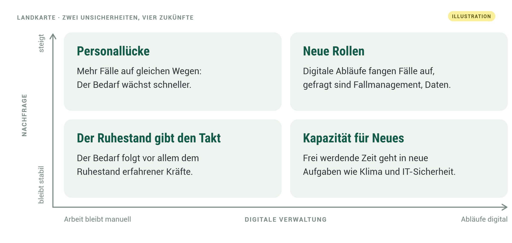
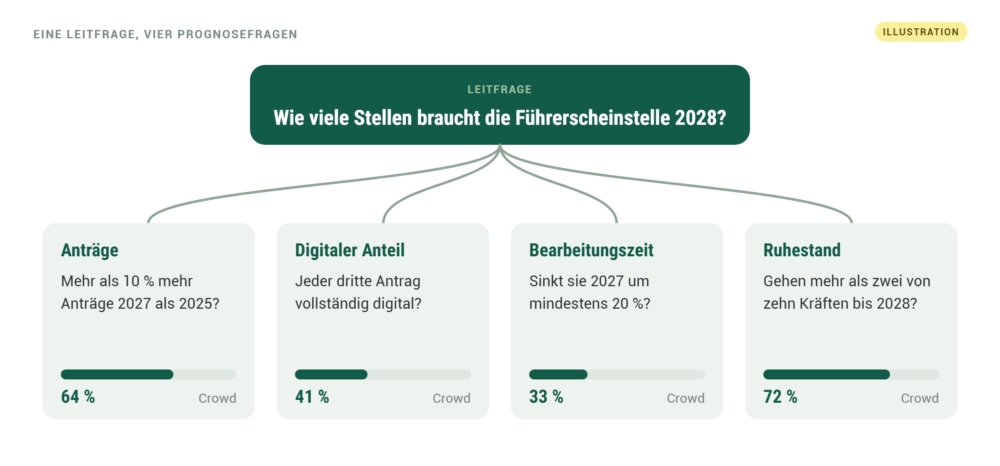

Wie viele Menschen braucht die Stadt in fünf Jahren, und mit welchen Fähigkeiten?
Fallbeispiel
Wie viele Menschen braucht die Stadt in fünf Jahren?
Eine Großstadtverwaltung verbindet das Wissen ihrer Ämter und Bezirke zu einer strategischen Personalplanung. Das Perspektiv bringt die Initiative ins Rollen, das Radar hält sie in Bewegung: Mitarbeitende schätzen ein, was den Bedarf treibt, und die Stadt plant Stellen, Ausbildung und Qualifizierung danach.
Fallbeispiel · Verwaltung einer Großstadt
Die Leitfrage
Die Ausgangslage
Wie viele Menschen eine Stadtverwaltung braucht, hängt an Entwicklungen, die niemand allein überblickt: wie viele Kinder eingeschult werden, wie viele Anträge in den Bürgerdiensten eingehen, wie schnell Abläufe digital werden, wer in den Ruhestand geht. Das Wissen dazu ist vorhanden, aber verteilt, in Ämtern, Bezirken und Schulen.
In der Personalplanung kommt es oft erst an, wenn ein Engpass da ist. Dann wird kurzfristig eingestellt, und Ausbildung und Qualifizierung laufen hinterher. Eine Planung, die früher ansetzt, braucht neben der Statistik die Einschätzungen der Menschen, die die Entwicklung täglich sehen.
Zwei Unsicherheiten, vier Zukünfte

Wie stark die Nachfrage nach Leistungen wächst und wie weit die Verwaltung digital arbeitet, ist offen. Aus beiden Fragen entsteht eine Landkarte, und jede Zukunft verlangt eine andere Planung.
Beispiel zur Veranschaulichung.
Vom Perspektiv zum Radar
Starten
Im Perspektiv erarbeiten Personalplanung, Ämter und Personalvertretung ein gemeinsames Bild: welche Entwicklungen den Bedarf treiben, wo die größten Unsicherheiten liegen und welche Leitfragen die Planung beantworten muss. Aus diesem Bild entsteht der Auftrag für die Initiative; das Perspektiv ist hier der Strategie-Starter.
Zerlegen
Jede Leitfrage wird in Prognosefragen zerlegt, die sich überprüfen lassen. Für den Bedarf an Schulen sind das etwa Einschulungen, Zuzug und Wiederholungen; für eine Führerscheinstelle die Zahl der Anträge, der digitale Anteil und die Bearbeitungszeit.
Einschätzen
Im Radar schätzen Mitarbeitende aus Ämtern und Bezirken die Fragen in Zyklen ein, anonym und mit kurzer Begründung. Eine KI liefert zu jeder Frage eine zweite Einschätzung. Ausgewertet wird auf Ebene der Ämter, nicht der Personen.
Planen
Die Signale gehen in die Personal- und Ausbildungsplanung. Stellen, Ausbildungsplätze und Qualifizierung werden früher festgelegt, und die Gründe dafür sind nachvollziehbar.
Was die Mitarbeitenden früher sehen
Was die Statistik zeigt, kommt spät. Wer in den Bürgerdiensten, in der Schulverwaltung oder im Bauamt arbeitet, sieht Veränderungen früher: neue Antragsarten, mehr Rückfragen, Abläufe, die plötzlich schneller oder langsamer werden. Im Radar wird diese Erfahrung vergleichbar und kommt dort an, wo geplant wird.
Von der Leitfrage zur Prognosefrage

Jede Leitfrage hat ihre Treiber, und zu jedem Treiber gibt es eine Prognosefrage. Die Einschätzungen der Crowd zeigen, welcher Treiber sich bewegt, und damit, wie viele Stellen gebraucht werden.
Beispiel zur Veranschaulichung.
Wird bis zum 31.12.2027 mindestens jeder dritte einfache Führerscheinantrag vollständig digital bearbeitet?
Leistung: Fahrerlaubnis · Schwelle: ein Drittel vollständig digital · Stichtag: 31.12.2027 · Auflösung: Fachstatistik des Amtes
Beispiel zur Veranschaulichung.
Weitere Signale
Schulen: Steigt die Zahl der Einschulungen zum Schuljahr 2027/28 um mehr als fünf Prozent gegenüber 2025/26?
Ruhestand: Gehen bis zum 31.12.2027 mehr als acht Prozent der Vollzeitkräfte der Verwaltung in den Ruhestand?
Neue Aufgaben: Arbeitet bis zum 30.06.2027 ein mehrsprachiger digitaler Assistent in mindestens drei Ämtern?
Beispiele zur Veranschaulichung.
Wofür die Stadt das Radar nutzt
Engpässe früh sehen
Wo Bedarf entsteht, ob in Bürgerdiensten, Kitas, Schulen oder IT, wird sichtbar, bevor Stellen unbesetzt bleiben.
Ausbildung ausrichten
Ausbildungsplätze, Trainings und Recruiting folgen dem Bedarf, der sich abzeichnet, nicht dem des Vorjahres.
Planung begründen
Annahmen und Signale liegen offen. Das macht die Personalplanung in Verwaltung und Politik nachvollziehbar.
Weitere Fallbeispiele
Wie viele Fachleute braucht die Qualität, wenn KI mitprüft?
Ein internationaler Industriekonzern schätzt mit Fachleuten aus seinen Werken ein, wie KI, Zulassungsregeln und der Markt für Fachleute die Qualitätsarbeit verändern.
Welche Beratung brauchen Verwaltungen noch?
Ein Fachverband im öffentlichen Dienst bringt unterschiedliche Erwartungen in ein gemeinsames Bild möglicher Zukünfte, mit Signalen für den richtigen Zeitpunkt.
Wohin entwickelt sich die regionale Wertschöpfung?
Eine Kammer verbindet Prognosefragen, menschliches Wissen und KI für Prioritäten und die Orientierung ihrer Mitglieder.
Ihr Thema ist nicht dabei?
Die Fallbeispiele zeigen einen Ausschnitt. Beschreiben Sie uns Ihr Thema, und wir schlüsseln es für Sie auf.